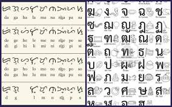
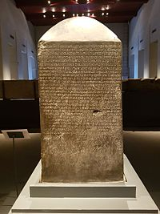

Thai alphabet is used to write the Thai, Southern Thai and other languages in Thailand. It has 44 consonant letters (Thai: พยัญชนะ, phayanchana), 15 vowel symbols (Thai: สระ, sara) that combine into at least 28 vowel forms, and four tone diacritics (Thai: วรรณยุกต์ or วรรณยุต, wannayuk or wannayut). Although commonly referred to as the "Thai alphabet", the script is in fact not a true alphabet but an abugida, a writing system in which each consonant may invoke an inherent vowel sound. In the case of the Thai script this is an implied 'a' or 'o'. Consonants are written horizontally from left to right, with vowels arranged above, below, to the left, or to the right of the corresponding consonant, or in a combination of positions. Thai has its own set of Thai numerals that are based on the Hindu-Arabic numeral system (Thai: เลขไทย, lek thai), but the standard western Hindu-Arabic numerals (Thai: เลขฮินดูอารบิก, lek hindu arabik) are also commonly used.

The Thai alphabet is derived from the Old Khmer script (Thai: อักษรขอม, akson khom), which is a southern Brahmic style of writing derived from the south Indian Pallava alphabet (Thai: ปัลลวะ). Thai is considered to be the first scripts in the world which invented tone markers to indicate distinctive tones,[1] which are lacking in the Mon-Khmer (Austroasiatic languages) and Indo-Aryan languages from which its script is derived. Although Chinese and other Sino-Tibetan languages have distinctive tones in their phonological system, no tone marker is found in their orthographies. Thus, tone markers are an innovation in the Thai language that later influenced other related Tai languages and some Tibeto-Burman languages on the Southeast Asian mainland. In most Brahmic scripts such as Devanagari, Khmer or Mon script; successive consonants lacking a vowel in between them may physically join together as a conjunct or ligature. However Thai (and the related Lao script) is unique in how it does not have a system of conjunct letters or subscript consonants. Thai tradition attributes the creation of the script to King Ramkhamhaeng the Great in 1283, though this has been challenged.
